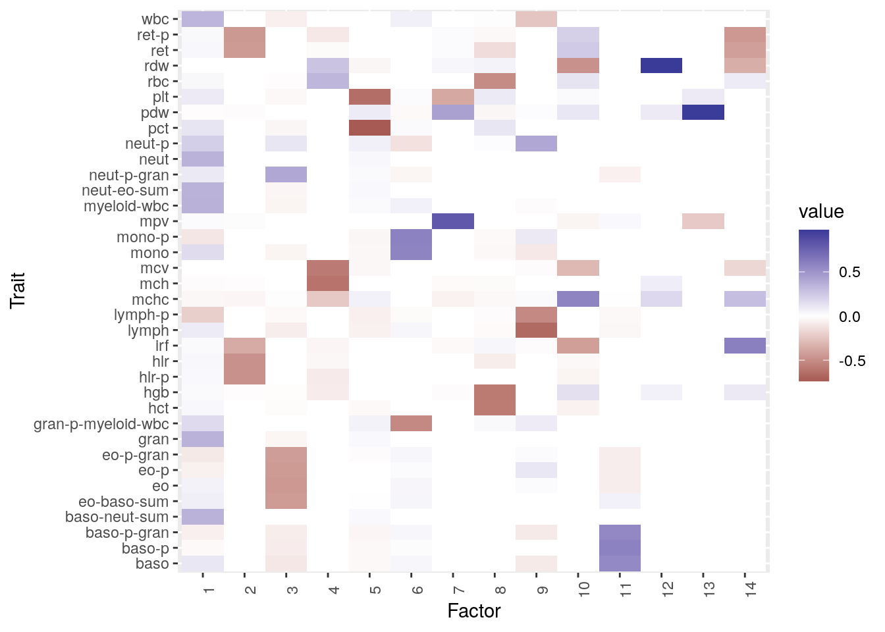
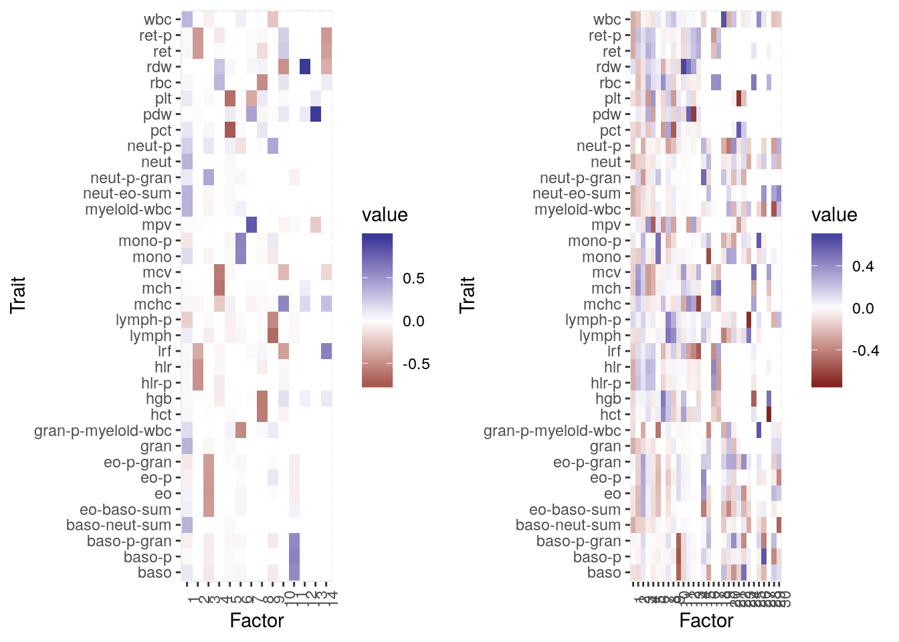
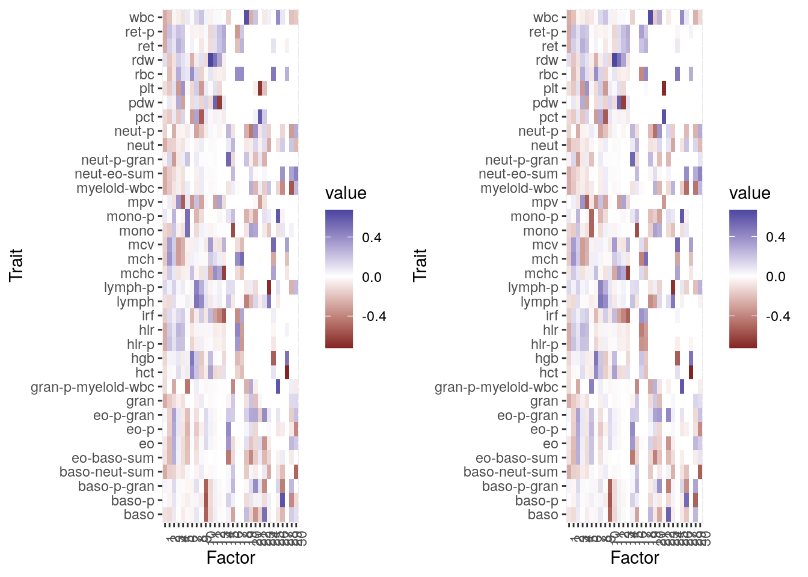
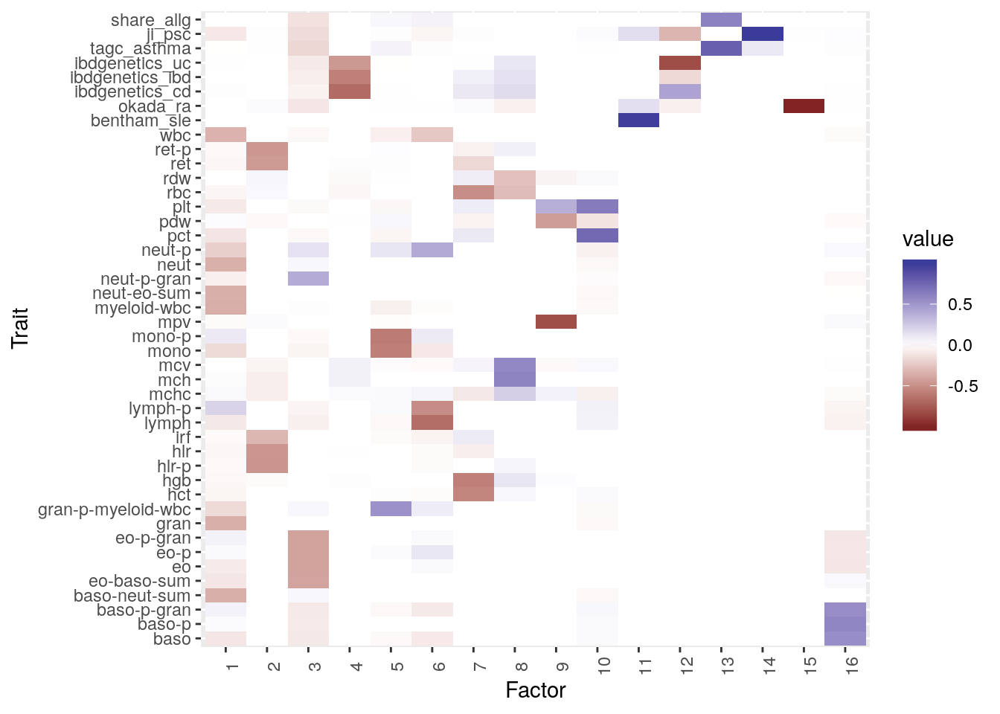

Astle et al. Blood Cell Traits
Jean Morrison
2019-11-21
Last updated: 2019-11-21
Checks: 7 0
Knit directory: sumstatFactors/
This reproducible R Markdown analysis was created with workflowr (version 1.4.0.9000). The Checks tab describes the reproducibility checks that were applied when the results were created. The Past versions tab lists the development history.
Great! Since the R Markdown file has been committed to the Git repository, you know the exact version of the code that produced these results.
Great job! The global environment was empty. Objects defined in the global environment can affect the analysis in your R Markdown file in unknown ways. For reproduciblity it’s best to always run the code in an empty environment.
The command set.seed(20190819) was run prior to running the code in the R Markdown file. Setting a seed ensures that any results that rely on randomness, e.g. subsampling or permutations, are reproducible.
Great job! Recording the operating system, R version, and package versions is critical for reproducibility.
Nice! There were no cached chunks for this analysis, so you can be confident that you successfully produced the results during this run.
Great job! Using relative paths to the files within your workflowr project makes it easier to run your code on other machines.
Great! You are using Git for version control. Tracking code development and connecting the code version to the results is critical for reproducibility. The version displayed above was the version of the Git repository at the time these results were generated.
Note that you need to be careful to ensure that all relevant files for the analysis have been committed to Git prior to generating the results (you can use wflow_publish or wflow_git_commit). workflowr only checks the R Markdown file, but you know if there are other scripts or data files that it depends on. Below is the status of the Git repository when the results were generated:
Ignored files:
Ignored: .Rhistory
Ignored: .Rproj.user/
Ignored: analysis/fixed_factors_cache/
Ignored: analysis/metabo_flash_experiments_cache/
Ignored: analysis/pathway_factors_cache/
Ignored: analysis/simulations_cache/
Untracked files:
Untracked: R/gao_stability.R
Untracked: R/mask_flashier.R
Untracked: R/pve_by_trait.R
Untracked: R/run_flashier.R
Untracked: R/simulations.R
Untracked: all_annovar.csv
Untracked: all_genes.txt
Untracked: all_vars.tsv
Untracked: analysis/genetic_correlation.Rmd
Untracked: analysis_data/.~lock.metabo2_gwas.csv#
Untracked: analysis_data/HACER-enhancers.txt
Untracked: analysis_data/HACER_README.txt
Untracked: analysis_data/bc_gwas_mats.RDS
Untracked: analysis_data/bc_gwas_mats_order1.RDS
Untracked: analysis_data/bc_order1__flashier__by_col.RDS
Untracked: analysis_data/bc_order1__flashier__by_row.RDS
Untracked: analysis_data/bc_order1__flashier__constant.RDS
Untracked: analysis_data/bc_order1__flashier__kronecker.RDS
Untracked: analysis_data/bc_order1__flashier__noisy_bycol.RDS
Untracked: analysis_data/bc_order1__flashier__noisy_byrow.RDS
Untracked: analysis_data/bc_order1__flashier__noisy_constant.RDS
Untracked: analysis_data/bc_order1__flashier__zero.RDS
Untracked: analysis_data/bc_order1__from_data__by_col.RDS
Untracked: analysis_data/bc_order1__from_data__by_row.RDS
Untracked: analysis_data/bc_order1__from_data__constant.RDS
Untracked: analysis_data/bc_order1__from_data__kronecker.RDS
Untracked: analysis_data/bc_order1__from_data__noisy_bycol.RDS
Untracked: analysis_data/bc_order1__from_data__noisy_byrow.RDS
Untracked: analysis_data/bc_order1__from_data__noisy_constant.RDS
Untracked: analysis_data/bc_order1__from_data__zero.RDS
Untracked: analysis_data/bc_order1__soft_impute__by_col.RDS
Untracked: analysis_data/bc_order1__soft_impute__by_row.RDS
Untracked: analysis_data/bc_order1__soft_impute__constant.RDS
Untracked: analysis_data/bc_order1__soft_impute__kronecker.RDS
Untracked: analysis_data/bc_order1__soft_impute__noisy_bycol.RDS
Untracked: analysis_data/bc_order1__soft_impute__noisy_byrow.RDS
Untracked: analysis_data/bc_order1__soft_impute__noisy_constant.RDS
Untracked: analysis_data/bc_order1__soft_impute__zero.RDS
Untracked: analysis_data/bc_zscore_order1__flashier__by_col.RDS
Untracked: analysis_data/bc_zscore_order1__flashier__by_row.RDS
Untracked: analysis_data/bc_zscore_order1__flashier__constant.RDS
Untracked: analysis_data/bc_zscore_order1__flashier__kronecker.RDS
Untracked: analysis_data/bc_zscore_order1__flashier__noisy_bycol.RDS
Untracked: analysis_data/bc_zscore_order1__flashier__noisy_byrow.RDS
Untracked: analysis_data/bc_zscore_order1__flashier__noisy_constant.RDS
Untracked: analysis_data/bc_zscore_order1__flashier__zero.RDS
Untracked: analysis_data/bc_zscore_order1__from_data__by_col.RDS
Untracked: analysis_data/bc_zscore_order1__from_data__by_row.RDS
Untracked: analysis_data/bc_zscore_order1__from_data__constant.RDS
Untracked: analysis_data/bc_zscore_order1__from_data__kronecker.RDS
Untracked: analysis_data/bc_zscore_order1__from_data__noisy_bycol.RDS
Untracked: analysis_data/bc_zscore_order1__from_data__noisy_byrow.RDS
Untracked: analysis_data/bc_zscore_order1__from_data__noisy_constant.RDS
Untracked: analysis_data/bc_zscore_order1__from_data__zero.RDS
Untracked: analysis_data/bc_zscore_order1__soft_impute__by_col.RDS
Untracked: analysis_data/bc_zscore_order1__soft_impute__by_row.RDS
Untracked: analysis_data/bc_zscore_order1__soft_impute__constant.RDS
Untracked: analysis_data/bc_zscore_order1__soft_impute__kronecker.RDS
Untracked: analysis_data/bc_zscore_order1__soft_impute__noisy_bycol.RDS
Untracked: analysis_data/bc_zscore_order1__soft_impute__noisy_byrow.RDS
Untracked: analysis_data/bc_zscore_order1__soft_impute__noisy_constant.RDS
Untracked: analysis_data/bc_zscore_order1__soft_impute__zero.RDS
Untracked: analysis_data/bcai_gwas_mats_noprune.RDS
Untracked: analysis_data/bcai_gwas_mats_order1.RDS
Untracked: analysis_data/bcai_order1__flashier__by_col.RDS
Untracked: analysis_data/bcai_order1__flashier__by_row.RDS
Untracked: analysis_data/bcai_order1__flashier__constant.RDS
Untracked: analysis_data/bcai_order1__flashier__kronecker.RDS
Untracked: analysis_data/bcai_order1__flashier__noisy_bycol.RDS
Untracked: analysis_data/bcai_order1__flashier__noisy_constant.RDS
Untracked: analysis_data/bcai_order1__from_data__by_col.RDS
Untracked: analysis_data/bcai_order1__from_data__by_row.RDS
Untracked: analysis_data/bcai_order1__from_data__constant.RDS
Untracked: analysis_data/bcai_order1__from_data__kronecker.RDS
Untracked: analysis_data/bcai_order1__from_data__noisy_bycol.RDS
Untracked: analysis_data/bcai_order1__from_data__noisy_byrow.RDS
Untracked: analysis_data/bcai_order1__from_data__noisy_constant.RDS
Untracked: analysis_data/bcai_order1__soft_impute__by_col.RDS
Untracked: analysis_data/bcai_order1__soft_impute__by_row.RDS
Untracked: analysis_data/bcai_order1__soft_impute__constant.RDS
Untracked: analysis_data/bcai_order1__soft_impute__kronecker.RDS
Untracked: analysis_data/bcai_order1__soft_impute__noisy_bycol.RDS
Untracked: analysis_data/bcai_order1__soft_impute__noisy_constant.RDS
Untracked: analysis_data/eqtl_genes.RDS
Untracked: analysis_data/flashier_res2019-09-03.RDS
Untracked: analysis_data/metabo2_gwas.csv
Untracked: analysis_data/metabo3_order1__flashier__by_col.RDS
Untracked: analysis_data/metabo3_order1__flashier__by_row.RDS
Untracked: analysis_data/metabo3_order1__flashier__constant.RDS
Untracked: analysis_data/metabo3_order1__flashier__kronecker.RDS
Untracked: analysis_data/metabo3_order1__flashier__noisy_bycol.RDS
Untracked: analysis_data/metabo3_order1__flashier__noisy_byrow.RDS
Untracked: analysis_data/metabo3_order1__flashier__noisy_constant.RDS
Untracked: analysis_data/metabo3_order1__flashier__zero.RDS
Untracked: analysis_data/metabo3_order1__from_data__by_col.RDS
Untracked: analysis_data/metabo3_order1__from_data__by_row.RDS
Untracked: analysis_data/metabo3_order1__from_data__constant.RDS
Untracked: analysis_data/metabo3_order1__from_data__kronecker.RDS
Untracked: analysis_data/metabo3_order1__from_data__noisy_bycol.RDS
Untracked: analysis_data/metabo3_order1__from_data__noisy_byrow.RDS
Untracked: analysis_data/metabo3_order1__from_data__noisy_constant.RDS
Untracked: analysis_data/metabo3_order1__from_data__zero.RDS
Untracked: analysis_data/metabo3_order1__soft_impute__by_col.RDS
Untracked: analysis_data/metabo3_order1__soft_impute__by_row.RDS
Untracked: analysis_data/metabo3_order1__soft_impute__constant.RDS
Untracked: analysis_data/metabo3_order1__soft_impute__kronecker.RDS
Untracked: analysis_data/metabo3_order1__soft_impute__noisy_bycol.RDS
Untracked: analysis_data/metabo3_order1__soft_impute__noisy_byrow.RDS
Untracked: analysis_data/metabo3_order1__soft_impute__noisy_constant.RDS
Untracked: analysis_data/metabo3_order1__soft_impute__zero.RDS
Untracked: analysis_data/metabo3_order1_mask__flashier__by_col.RDS
Untracked: analysis_data/metabo3_order1_mask__flashier__by_row.RDS
Untracked: analysis_data/metabo3_order1_mask__flashier__constant.RDS
Untracked: analysis_data/metabo3_order1_mask__flashier__kronecker.RDS
Untracked: analysis_data/metabo3_order1_mask__flashier__noisy_bycol.RDS
Untracked: analysis_data/metabo3_order1_mask__flashier__noisy_byrow.RDS
Untracked: analysis_data/metabo3_order1_mask__flashier__noisy_constant.RDS
Untracked: analysis_data/metabo3_order1_mask__flashier__zero.RDS
Untracked: analysis_data/metabo3_order1_mask__from_data__by_col.RDS
Untracked: analysis_data/metabo3_order1_mask__from_data__by_row.RDS
Untracked: analysis_data/metabo3_order1_mask__from_data__constant.RDS
Untracked: analysis_data/metabo3_order1_mask__from_data__kronecker.RDS
Untracked: analysis_data/metabo3_order1_mask__from_data__noisy_bycol.RDS
Untracked: analysis_data/metabo3_order1_mask__from_data__noisy_byrow.RDS
Untracked: analysis_data/metabo3_order1_mask__from_data__noisy_constant.RDS
Untracked: analysis_data/metabo3_order1_mask__from_data__zero.RDS
Untracked: analysis_data/metabo3_order1_mask__soft_impute__by_col.RDS
Untracked: analysis_data/metabo3_order1_mask__soft_impute__by_row.RDS
Untracked: analysis_data/metabo3_order1_mask__soft_impute__constant.RDS
Untracked: analysis_data/metabo3_order1_mask__soft_impute__kronecker.RDS
Untracked: analysis_data/metabo3_order1_mask__soft_impute__noisy_bycol.RDS
Untracked: analysis_data/metabo3_order1_mask__soft_impute__noisy_byrow.RDS
Untracked: analysis_data/metabo3_order1_mask__soft_impute__noisy_constant.RDS
Untracked: analysis_data/metabo3_order1_mask__soft_impute__zero.RDS
Untracked: analysis_data/metabo_gwas.csv
Untracked: analysis_data/pathway_loadings_data.RDS
Untracked: analysis_data/pathway_loadings_fit.RDS
Untracked: buttons.css
Untracked: code/flashier_compare.R
Untracked: code/flashier_compare_jason.R
Untracked: code/hide_output.js
Untracked: code/mask_flashier.R
Untracked: code/mask_flashr.R
Untracked: docs/figure/simulations.Rmd/
Untracked: factor1_annovar.csv
Untracked: factor1_genes.txt
Untracked: factor20_annovar.csv
Untracked: factor20_genes.txt
Untracked: factor2_annovar.csv
Untracked: factor2_genes.txt
Untracked: factor6_annovar.csv
Untracked: factor6_genes.txt
Untracked: factor_19_vars.txt
Untracked: factor_1_vars.tsv
Untracked: factor_20_vars.tsv
Untracked: factor_2_vars.tsv
Untracked: factor_6_vars.tsv
Untracked: factor_6_vars.txt
Untracked: k99_analysis.R
Untracked: k99_fit.RDS
Untracked: metabo_factors.RDS
Untracked: snp_annot.RDS
Unstaged changes:
Modified: NAMESPACE
Modified: R/plot_factors.R
Modified: analysis/metabo_flash_experiments_order1.Rmd
Modified: man/plot_factors.Rd
Note that any generated files, e.g. HTML, png, CSS, etc., are not included in this status report because it is ok for generated content to have uncommitted changes.
These are the previous versions of the R Markdown and HTML files. If you’ve configured a remote Git repository (see ?wflow_git_remote), click on the hyperlinks in the table below to view them.
| File | Version | Author | Date | Message |
|---|---|---|---|---|
| Rmd | 1133e2f | Jean Morrison | 2019-11-21 | wflow_publish(c(“analysis/blood_cell.Rmd”, “analysis/simulations.Rmd”, “analysis/index.Rmd”)) |
Introduction
In this analysis I apply FLASH to the set of 36 blood cell composition traits from Astle et al. (2016). I iwll look at the analysis a few ways. First looking only at the 36 blood cell traits and then adding in several auto imune traits to see if we can detect shared genetics. I will also use this example to compare fitting with effect estimates and \(z\)-scores which will hopefully yield similar structure.

Structure of Blood Cell Phenotypes
library(flashier)
library(sumstatFactors)Registered S3 method overwritten by 'flashr':
method from
print.flash flashierWarning: replacing previous import 'intervals::reduce' by 'purrr::reduce'
when loading 'sumstatFactors'library(tidyverse)── Attaching packages ─────────────────────────────────────────────────────────────────────────────────────────────────────────────────────────────────────── tidyverse 1.2.1 ──✔ ggplot2 3.2.1 ✔ purrr 0.3.2
✔ tibble 2.1.3 ✔ dplyr 0.8.3
✔ tidyr 0.8.3 ✔ stringr 1.4.0
✔ readr 1.3.1 ✔ forcats 0.4.0── Conflicts ────────────────────────────────────────────────────────────────────────────────────────────────────────────────────────────────────────── tidyverse_conflicts() ──
✖ dplyr::filter() masks stats::filter()
✖ dplyr::lag() masks stats::lag()library(reshape2)
Attaching package: 'reshape2'The following object is masked from 'package:tidyr':
smithslibrary(causeSims)
library(ashr)
library(gridExtra)
Attaching package: 'gridExtra'The following object is masked from 'package:dplyr':
combineknitr::opts_chunk$set(autodep = TRUE)
knitr::opts_chunk$set(echo = TRUE, collapse = TRUE, comment = "#>", warning = FALSE)Blood cell traits only
Fitting effect estimates
As before, I fit flash using a variety of variance and initialization parameters. We will start by looking at the factors estimated using the “noisy_bycol” variance and “soft_impute” initialization.
mats <- readRDS("analysis_data/bc_gwas_mats_order1.RDS")
traits <- str_split(mats$traits, "/") %>% map(., 2) %>%
unlist(.) %>%
str_replace(., ".top_summary_statistics.tsv.gz", "") %>%
str_replace(., "bc_astle_", "")
fit <- readRDS("analysis_data/bc_order1__soft_impute__noisy_bycol.RDS")
p1 <- plot_factors(fit$loadings.pm[[2]], traits)
p1
The first factor affects many traits. After that, the factors generally group related traits. For example, factor 2 affects all of the reticulocyte (immature red blood cell) phenotypes. Factor 3 affects eosinophils but also neutrophils. Neutrophils, eosinophils, and basophils are all granulocytes which are types of white blood cell. Eosinophils and basophils are both implicated in allergic response.
Taking a look at the ELBO across variance and initialization types.
| var | flashier | soft_impute | from_data |
|---|---|---|---|
| constant | -49227(14) | -49250(14) | -15141(30) |
| by_row | -25227(18) | -25215(18) | 0(30) |
| by_col | -23573(14) | -23542(14) | -8879(30) |
| kronecker | -6728(15) | -6749(15) | -7088(23) |
| zero | -299394(14) | -299399(14) | -299391(14) |
| noisy_constant | -299412(14) | -299389(14) | -299443(14) |
| noisy_byrow | -299043(17) | -299043(17) | -299264(14) |
| noisy_bycol | -299077(14) | -299074(14) | -299107(14) |
Comparing factors between “noisy_bycol” and “by_row” which has given the best ELBO
fit2 <- readRDS("analysis_data/bc_order1__from_data__by_row.RDS")
p2 <- plot_factors(fit2$loadings.pm[[2]], traits)
grid.arrange(p1, p2, ncol=2)
Hmmm. The fit with the betst ELBO is much less sparse and interpretable. The “noisy” fits all have much worse ELBO and I am not sure why this is. Could it be a calculation error?
Fitting \(z\)-scores
In this data, fitting with \(z\)-scores gives the same results as fitting with effect estimates.
| var | flashier | soft_impute | from_data |
|---|---|---|---|
| constant | -49309(14) | -49332(14) | -15359(30) |
| by_row | -25309(18) | -25298(18) | 0(30) |
| by_col | -23655(14) | -23624(14) | -9353(30) |
| kronecker | -6810(15) | -6831(15) | -4215(24) |
| zero | -299476(14) | -299481(14) | -299473(14) |
| noisy_constant | -299495(14) | -299471(14) | -299510(14) |
| noisy_byrow | -299125(17) | -299125(17) | -299346(14) |
| noisy_bycol | -299159(14) | -299156(14) | -299186(14) |
fit2_z <- readRDS("analysis_data/bc_zscore_order1__from_data__by_row.RDS")
p2z <- plot_factors(fit2_z$loadings.pm[[2]], traits)
grid.arrange(p2, p2z, ncol=2)
Blood cell traits and autoimune disorders
mats <- readRDS("analysis_data/bcai_gwas_mats_order1.RDS")
traits <- str_split(mats$traits, "/") %>% map(., 2) %>%
unlist(.) %>%
str_replace(., ".top_summary_statistics.tsv.gz", "") %>%
str_replace(., "bcai_astle_", "") %>%
str_replace(., "bcai_", "")
fit <- readRDS("analysis_data/bcai_order1__soft_impute__noisy_bycol.RDS")
p1 <- plot_factors(fit$loadings.pm[[2]], traits)
p1
sessionInfo()
#> R version 3.6.1 (2019-07-05)
#> Platform: x86_64-pc-linux-gnu (64-bit)
#> Running under: Ubuntu 18.04.3 LTS
#>
#> Matrix products: default
#> BLAS: /usr/lib/x86_64-linux-gnu/openblas/libblas.so.3
#> LAPACK: /usr/lib/x86_64-linux-gnu/libopenblasp-r0.2.20.so
#>
#> locale:
#> [1] LC_CTYPE=en_US.UTF-8 LC_NUMERIC=C
#> [3] LC_TIME=en_US.UTF-8 LC_COLLATE=en_US.UTF-8
#> [5] LC_MONETARY=en_US.UTF-8 LC_MESSAGES=en_US.UTF-8
#> [7] LC_PAPER=en_US.UTF-8 LC_NAME=C
#> [9] LC_ADDRESS=C LC_TELEPHONE=C
#> [11] LC_MEASUREMENT=en_US.UTF-8 LC_IDENTIFICATION=C
#>
#> attached base packages:
#> [1] stats graphics grDevices utils datasets methods base
#>
#> other attached packages:
#> [1] gridExtra_2.3 ashr_2.2-32
#> [3] causeSims_0.1.0 reshape2_1.4.3
#> [5] forcats_0.4.0 stringr_1.4.0
#> [7] dplyr_0.8.3 purrr_0.3.2
#> [9] readr_1.3.1 tidyr_0.8.3
#> [11] tibble_2.1.3 ggplot2_3.2.1
#> [13] tidyverse_1.2.1 sumstatFactors_0.0.0.9000
#> [15] flashier_0.1.16
#>
#> loaded via a namespace (and not attached):
#> [1] nlme_3.1-141 matrixStats_0.54.0
#> [3] fs_1.3.1 gsmr_1.0.9
#> [5] lubridate_1.7.4 doParallel_1.0.15
#> [7] httr_1.4.1 cause_0.3.0.0224
#> [9] rprojroot_1.3-2 numDeriv_2016.8-1.1
#> [11] flashr_0.6-6 tools_3.6.1
#> [13] backports_1.1.4 R6_2.4.0
#> [15] DBI_1.0.0 lazyeval_0.2.2
#> [17] colorspace_1.4-1 withr_2.1.2
#> [19] tidyselect_0.2.5 RMySQL_0.10.17
#> [21] arrangements_1.1.5 compiler_3.6.1
#> [23] git2r_0.26.1 cli_1.1.0
#> [25] rvest_0.3.4 xml2_1.2.2
#> [27] plotly_4.9.0 labeling_0.3
#> [29] scales_1.0.0 DEoptimR_1.0-8
#> [31] SQUAREM_2017.10-1 robustbase_0.93-5
#> [33] mixsqp_0.1-97 digest_0.6.20
#> [35] rmarkdown_1.15 pscl_1.5.2
#> [37] pkgconfig_2.0.2 htmltools_0.3.6
#> [39] highr_0.8 htmlwidgets_1.3
#> [41] rlang_0.4.0 readxl_1.3.1
#> [43] rstudioapi_0.10 generics_0.0.2
#> [45] jsonlite_1.6 magrittr_1.5
#> [47] loo_2.1.0 Matrix_1.2-17
#> [49] Rcpp_1.0.2 munsell_0.5.0
#> [51] furrr_0.1.0 RcppZiggurat_0.1.5
#> [53] stringi_1.4.3 whisker_0.4
#> [55] yaml_2.2.0 MASS_7.3-51.4
#> [57] MendelianRandomization_0.4.1 plyr_1.8.4
#> [59] MRPRESSO_1.0 grid_3.6.1
#> [61] listenv_0.7.0 parallel_3.6.1
#> [63] crayon_1.3.4 lattice_0.20-38
#> [65] splines_3.6.1 haven_2.1.1
#> [67] hms_0.5.1 zeallot_0.1.0
#> [69] knitr_1.24 pillar_1.4.2
#> [71] rjson_0.2.20 softImpute_1.4
#> [73] codetools_0.2-16 iterpc_0.4.1
#> [75] glue_1.3.1 evaluate_0.14
#> [77] mitools_2.4 RcppParallel_4.4.3
#> [79] data.table_1.12.2 modelr_0.1.5
#> [81] vctrs_0.2.0 foreach_1.4.7
#> [83] cellranger_1.1.0 gtable_0.3.0
#> [85] ebnm_0.1-24 future_1.14.0
#> [87] assertthat_0.2.1 xfun_0.9
#> [89] broom_0.5.2 survey_3.36
#> [91] survival_2.44-1.1 viridisLite_0.3.0
#> [93] truncnorm_1.0-8 intervals_0.15.1
#> [95] iterators_1.0.12 workflowr_1.4.0.9000
#> [97] globals_0.12.4 gmp_0.5-13.5